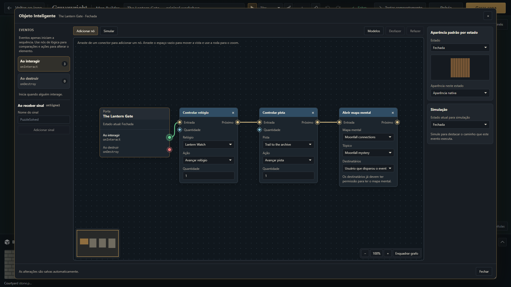
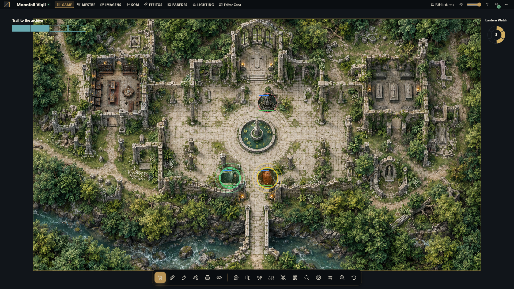
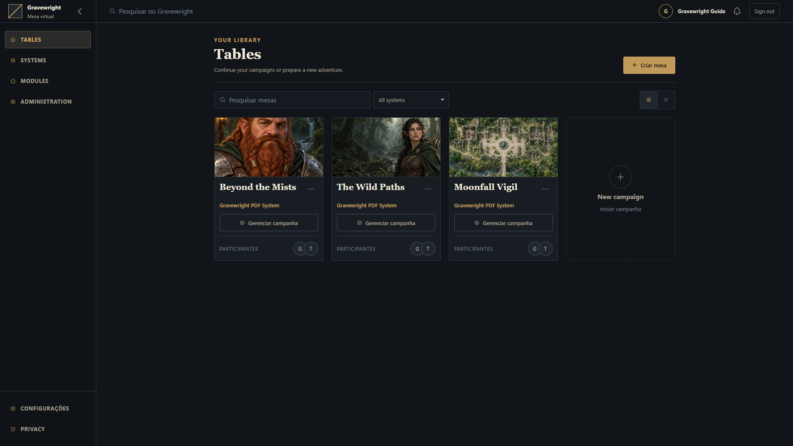
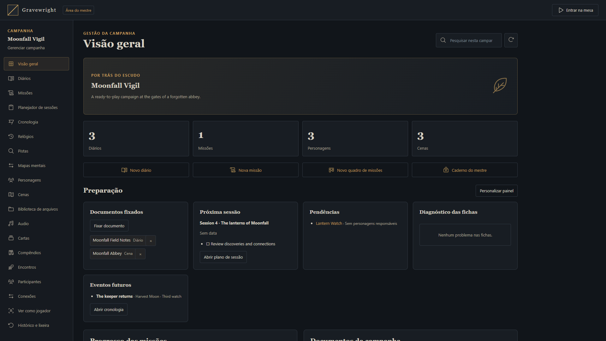
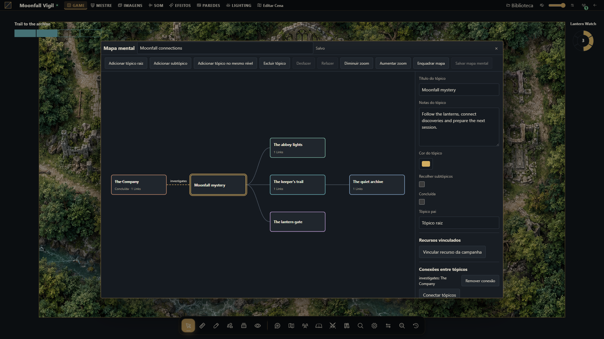
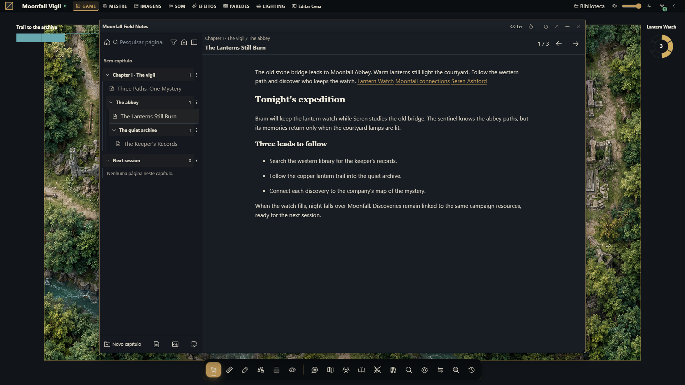
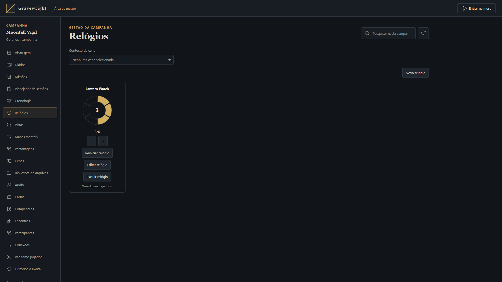
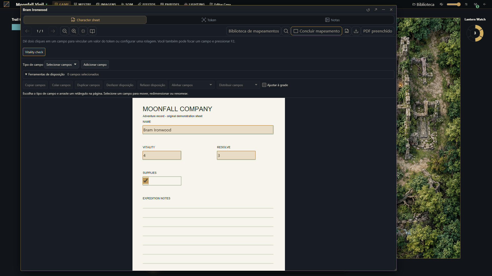

Construa seu mapa
Pinte pisos, desenhe paredes e adicione portas, objetos, luzes e efeitos. Use suas próprias camadas ou importe um mapa pronto como fundo.
VTT universal · Gratuito e open source · Alpha
Seu mundo. Seu grupo. Sua próxima grande sessão.
Disponível agora: 0.3.2 Alpha · Instaladores Windows, Linux e macOS incluídos
Seu jogo, suas ferramentas · Sistemas independentes, módulos e fichas PDFMap Builder · Novidades da 0.3.2
Pinte um mapa, importe uma imagem pronta ou traga a geometria de um Universal VTT. Adote cenas existentes compatíveis com Editar Cena, conecte comportamentos de Objetos Inteligentes e traga edições compatíveis da cena de volta ao projeto. Seu trabalho é salvo automaticamente durante a preparação; você escolhe quando gerar ou atualizar a cena.

Pinte pisos, desenhe paredes e adicione portas, objetos, luzes e efeitos. Use suas próprias camadas ou importe um mapa pronto como fundo.
Comece com modelos editáveis e conecte portas, pedidos de rolagem, missões, relógios, pistas e tópicos de mapas mentais. Personalize os nodes e o som ou a imagem opcional e teste o comportamento antes de jogar.
Gere uma cena exclusiva do mestre ou atualize a cena vinculada. Reabra o Builder ou volte à sua aba para importar edições compatíveis da cena; ative-a para os jogadores separadamente quando estiver pronto.

Instalação, campanhas, mapas e condução de sessões. Guias de produto com passo a passo e capturas reais.
02 / Para desenvolvedores ↗Arquitetura, ambiente de desenvolvimento, APIs, SDK, testes e distribuição. A referência do projeto dentro do site.
03 / Guias práticos de IA ↗Copie prompts para criar extensões, investigar bugs e escrever testes, com passos concretos de validação.
Uma mesa, muitas formas de jogar
Prepare os lugares que o grupo vai explorar, organize suas descobertas e crie a atmosfera da próxima cena. O Gravewright reúne as ferramentas compartilhadas de uma sessão de RPG; os sistemas instalados trazem suas próprias fichas e regras.
Prepare cenas com paredes, iluminação e névoa e escolha o que o grupo pode ver.
Abra as fichas do sistema, tenha os recursos por perto e envie as rolagens direto para o chat.
Mantenha diários, missões e materiais junto dos lugares e pessoas da campanha.
Role dados, toque áudio, compre cartas e acompanhe o combate sem trocar de aplicativo.
Gravewright em ação · Capturas reais do aplicativo
Veja a aplicação 0.3.2 real em uso: prepare uma campanha, conecte um mapa mental, organize diários e acompanhe relógios e pistas. A demonstração também mostra a mesa e uma ficha PDF mapeada, com dados fictícios de campanha.
 Outro mundo para explorarAmplie a cena de batalha preservada de The Dragon’s Legacy.
Outro mundo para explorarAmplie a cena de batalha preservada de The Dragon’s Legacy.Prepare encontros, organize as anotações da campanha e revele a cena certa quando o grupo chegar.
Entre na mesa hospedada pelo mestre usando o navegador, abra sua ficha e jogue com o grupo.
Mantenha personagens, lugares e descobertas compartilhadas juntos entre as sessões.
Seus personagens à mão
Traga um PDF conhecido com o Gravewright PDF System, mesmo sem campos editáveis, ou escolha um sistema compatível com fichas próprias. Vincule valores às barras dos tokens e a rolagens salvas e use as mesmas fichas na mesa ou no gestor da campanha.
A nova Alpha
O Gravewright 0.3.2 Alpha traz gestor de campanhas para mestres, mapas mentais colaborativos, descobertas compartilhadas e mais recursos para fichas PDF e mapas. Preparação e jogo usam os mesmos registros da campanha, com as permissões de cada recurso.
Versão disponível ↗
Abra Gerenciar campanha para acessar diários, missões, personagens, cenas e outras ferramentas nativas. Sete áreas de preparação acrescentam painel pessoal, planejador de sessões, linha do tempo/calendário, colunas de missões, conexões, prévia de jogador e histórico/lixeira.
Organize tópicos, notas e conexões e vincule 37 tipos de recursos da campanha. Os mestres escolhem quem pode ler e quais jogadores podem editar. Os mesmos mapas salvos abrem na mesa e no gestor; os recursos vinculados mantêm suas próprias permissões.
Abra relógios e pistas pelo dock inferior. Os indicadores fixados são transparentes e cada pessoa os posiciona no próprio navegador. Clique esquerdo avança o progresso editável; direito reduz. Dois cliques no nome abrem a edição para mestres ou a descrição para jogadores. Pistas revelam o conteúdo ao serem concluídas.
Crie capítulos vazios e subcapítulos, mova páginas ou deixe-as sem capítulo e reorganize sem perder o texto. Digite @ para vincular fichas, missões e outros recursos da campanha, ou / para inserir blocos. Cada leitor recebe apenas o conteúdo autorizado.
Mapeie campos e rolagens e use sete melhorias de edição: modelos reutilizáveis de mapeamento, aplicação em lote, campos calculados, seleção e alinhamento, desfazer/refazer do layout, exportação do PDF preenchido e diagnósticos de mapeamento. O PDF original é preservado.
Use Editar Cena para reabrir ou adotar uma cena compatível no Map Builder. Importe Universal VTT para uma cena vinculada e um projeto editável, com paredes, portas, luzes e grade compatíveis. Conecte nodes de Objetos Inteligentes a relógios, pistas e tópicos de mapas mentais e gere ou atualize a cena explicitamente.





Comece sua campanha
Baixe o ZIP para Windows, Linux ou macOS, execute o instalador da sua plataforma e crie a primeira mesa pelo navegador. Use o Runner gerado sempre que estiver pronto para jogar.
Windows x64 · Linux · macOS · Navegador com WebGL
Extraia o ZIP completo para uma pasta com permissão de escrita. O mesmo download inclui instaladores para Windows, Linux e macOS; mantenha os arquivos juntos.
Execute Install Windows.bat, Install Linux.sh ou Install macOS.command conforme a plataforma. O instalador baixa as ferramentas necessárias e prepara a instalação local.
Inicie o Gravewright Runner gerado para sua plataforma, crie a conta de administrador e prepare a campanha. Mantenha o Runner aberto enquanto joga.
Outras formas de hospedar
Prefere um servidor ou uma cópia do código? Use Python 3.14 ou superior e uv. Os comandos abaixo usam um shell POSIX e preservam sua configuração existente.
git clone https://github.com/Gravewright/gravewright.git
cd gravewright
uv sync --locked
cp -n .env.example .env
uv run --locked python manage.py migrate
uv run --locked python main.pyUma mesa universal, feita por você
O Gravewright oferece a mesa virtual. Sistemas independentes trazem fichas e regras de cada jogo; módulos acrescentam ferramentas como traduções e dados 3D. Use um sistema compatível ou PDFs mapeados para o jogo do grupo e crie suas extensões com a API documentada.
Escolha inglês, português brasileiro ou espanhol para sua interface. A API oficial de tradução também atende sistemas e módulos compatíveis.
Conheça o módulo ↗Veja as rolagens compatíveis em dados 3D e personalize suas cores, textos e aparência.
Conheça o módulo ↗Exemplo de sistema opcional · Disponível no Marketplace
DnD 5e SRD é um dos sistemas independentes que você pode instalar no Gravewright. Ele acrescenta fichas próprias, compêndios licenciados e automações compatíveis com as regras de 2014 e 2024.
Coleções parciais do SRD; os compêndios estão em inglês. Instale DnD 5e SRD 0.1.2 como um único pacote em Sistemas: fichas, compêndios e automações de combate ficam juntos. O mestre avança o combate pela mesa. Confira os requisitos do host no guia de instalação do sistema; sua configuração ainda documenta o VTT 0.2.3.


Pacote de compatibilidade opcional · Disponível no Marketplace
Um único pacote de sistema reúne fichas gratuitas de personagens e NPCs, 13 modelos vazios de itens e automações de SWADE. Crie o conteúdo da sua campanha e personalize os baralhos de ação e as opções da mesa.
O pacote não inclui compêndios nem textos do livro. Instale a versão 0.1.2 como um único pacote em Sistemas e selecione-o para a mesa. O mestre conduz as automações de combate pela mesa. Inglês está disponível por padrão; português e espanhol usam o Translator. Confira os requisitos do host no guia de instalação do pacote; sua configuração ainda documenta o VTT 0.2.3.
O núcleo do Gravewright usa GPL-3.0-only com uma permissão para módulos independentes. Módulos escritos de forma independente podem usar qualquer licença, inclusive proprietária. Consulte os termos completos na política de licenciamento.
Leia a política de licenciamento ↗Antes de começar
O Gravewright é um VTT universal. Use uma extensão de sistema compatível para ter fichas e automações próprias ou mapeie fichas PDF para o jogo do grupo. O suporte às regras depende do sistema instalado.
Sim. O Gravewright é gratuito e open source. Você hospeda sua instalação e mantém o controle dos arquivos da campanha. Módulos de terceiros têm suas próprias licenças e condições.
Os jogadores acessam um servidor compartilhado pelo navegador. O Runner inicia localmente no Windows, Linux ou macOS; siga o guia de hospedagem para disponibilizar sua instalação ao grupo.
Instale o Translator pelo Marketplace e ative seus idiomas. Cada usuário pode escolher inglês, português brasileiro ou espanhol; categorias, tags e busca por tags do Marketplace seguem essa escolha. Documentos e textos escritos pelo grupo mantêm o idioma original.
As campanhas ficam no seu host. A instalação portátil padrão guarda o banco de dados e a mídia enviada na pasta do aplicativo; você pode configurar outros locais. Encerre o Runner e faça backup do banco, da mídia, das configurações e das extensões instaladas antes de atualizar.
Sim. O Gravewright 0.3.2 Alpha já está disponível. O ZIP inclui instaladores para Windows, Linux e macOS. Sistemas e módulos são instalados separadamente. Faça backup da instalação e leia as notas antes de atualizar, especialmente se sua instalação informa a antiga numeração incorreta 3.0.1.
Pinte mapas, organize camadas e adicione paredes, portas, objetos, luzes e efeitos. Use os menus de objetos, escolha entre 14 modelos editáveis de comportamento ou conecte seus próprios nós de Objetos Inteligentes. Gere uma cena exclusiva do mestre, traga edições compatíveis da cena de volta ao projeto e atualize a cena vinculada. Ativá-la para os jogadores é uma ação separada.
Sim. Importe uma imagem pronta como fundo do Builder e adicione seus objetos e comportamentos. Importe Universal VTT no Builder para criar uma cena nativa vinculada e um projeto editável ou importe por Cenas e adote depois. A geometria compatível continua editável; a arte achatada permanece um único fundo. A exportação usa a cena nativa salva, não um rascunho não publicado do projeto.
DnD 5e SRD 0.1.2 está disponível como um único pacote em Sistemas. Ele reúne fichas próprias, automações de combate e coleções parciais licenciadas do SRD para os perfis de 2014 e 2024. Confira os requisitos do host no guia de instalação; o guia ainda documenta o VTT 0.2.3. Outros livros de D&D e artes oficiais não estão incluídos.
Obtenha a versão 0.1.2 em Sistemas e selecione-a para sua mesa, seguindo o guia de instalação e os requisitos do host do pacote. Esse guia ainda documenta o VTT 0.2.3. Fichas, modelos de itens, arquivos e automações pertencem ao mesmo pacote de sistema; não há módulo separado de regras.
Sim. O Gravewright aceita sistemas e módulos personalizados com APIs documentadas. Instale extensões de criadores em quem confia; módulos de navegador executam dentro da página da mesa.
Feito com a comunidade
Conte como o Gravewright funciona na sua mesa. Compartilhe uma ideia, relate um problema ou ajude com traduções, acessibilidade e documentação. Desenvolvedores também podem contribuir com o núcleo ou criar seus próprios módulos.
Abra espaço para sua próxima aventura